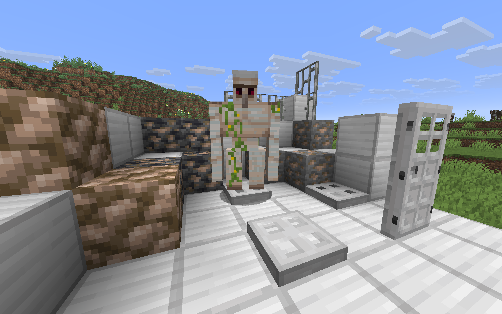

Farma żelaza w Minecraft
Stanisław Nużka
Żelazo w Minecraft to jeden z najbardziej podstawowych surowców o wszechstronnym zastosowaniu. Można z niego wytworzyć zbroję, broń, narzędzia, tory i wagoniki, niektóre komponenty powiązane z redstonem, drzwi, zapadnie, kowadła, wiaderka, kompasy i wiele innych przedmiotów. Zapewnienie stałego źródła tego materiału jest kluczowe do osiągania szybkich postępów w Minecrafcie.
Żelazo najłatwiej zdobyć w dużych jaskiniach. Występuje ono najczęściej na wysokości y=14, a do jego wydobycia potrzebujemy kamiennego lub lepszego kilofa. Można je też znaleźć w przeróżnych strukturach, np. wrakach statku, opuszczonych kopalniach czy dżunglowych świątyniach. Najlepszym jednak jego źrodłem pod względem wydajności i łatwości pozyskania są naturalnie pojawiające sie w wioskach żelazne golemy. Dzięki tej mechanice nietrudno zapewnić sobie nieograniczoną ilość żelaza bez potrzeby wkładania wysiłku w jego zdobycie.
Aby osiągnąć taki stan rzeczy, należy zbudować tzw. "farmę żelaza". Najprostsza jej wersja składa się trzech osadników zamkniętych pod ziemią w pomieszczeniu z łóżkami dla każdego z nich z zombie uwięzionego w łódce (służy on do straszenia osadników, bez tego golemy nie będą się pojawiać). Na powierzchni, powyżej pomieszczenia dla osadników, należy wyrównać teren, ogrodzić go oraz rozlać wodę. Woda ta ma za zadanie spychać golemy do lawy, która będzie zabijać golemy. Pod źródłem lawy należy ustawić lejki, które zbiorą wypadające z golemów żelazo i przetransportują je do skrzyni. Z niej można wyjmować wyprodukowane w ten sposób żelazo. Dołączony obrazek NIE przedstawia farmy żelaza.
Powrót